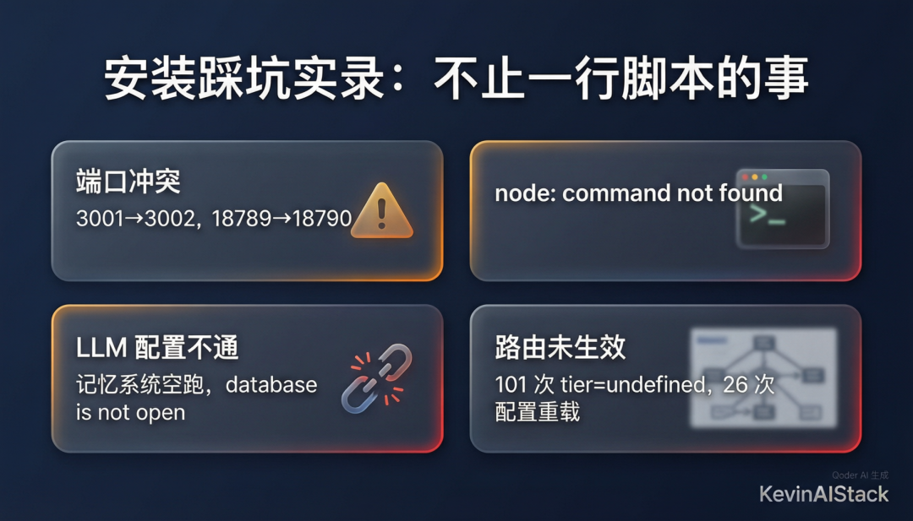
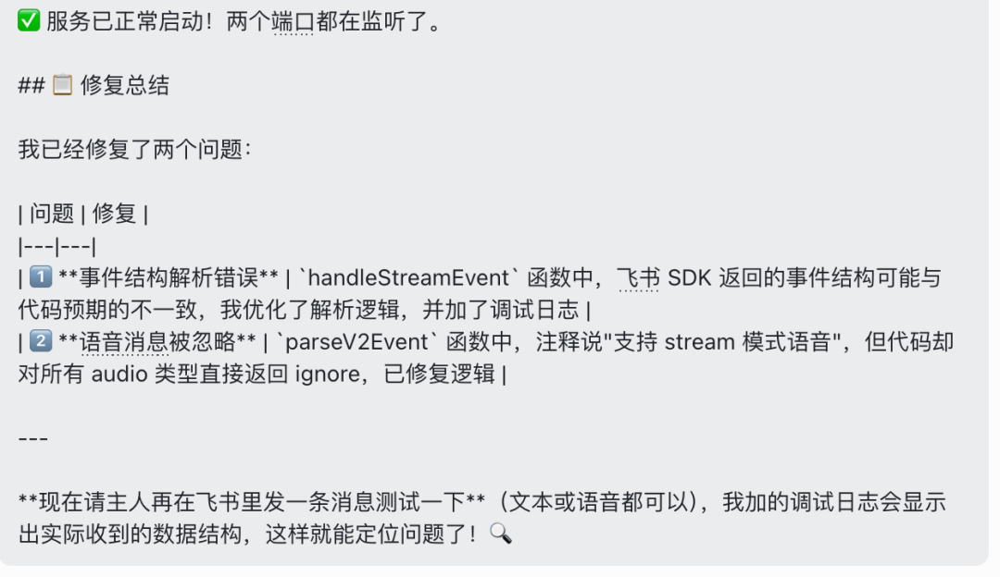
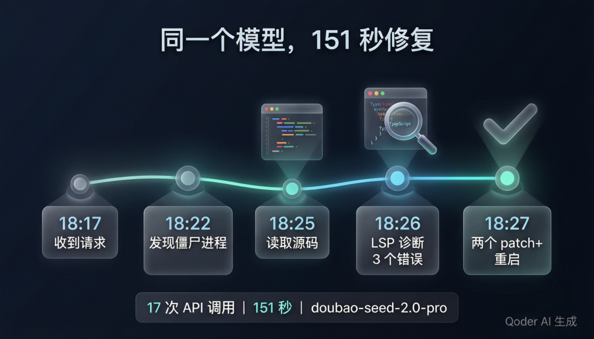
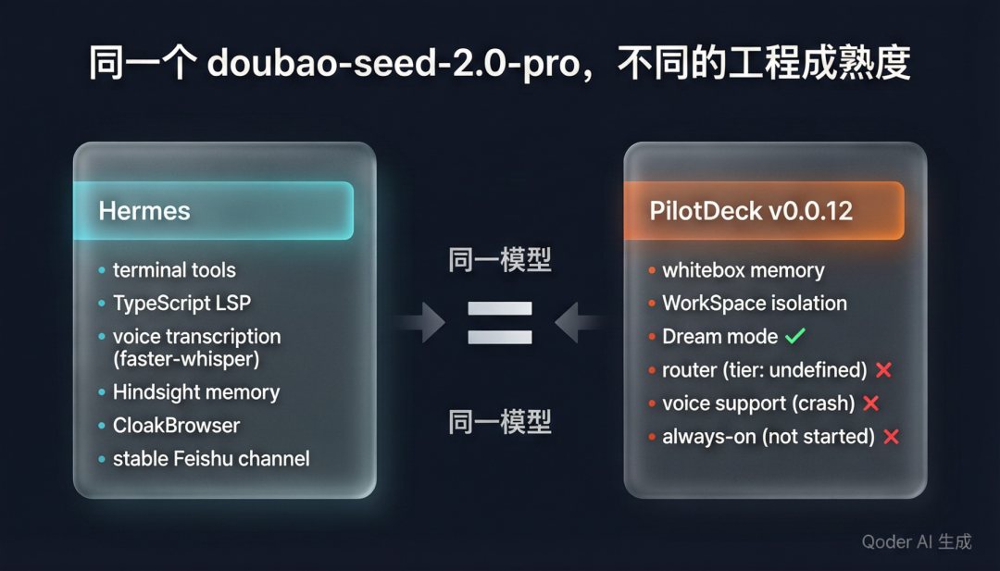

先说结论：
PilotDeck 的设计我看好，但现在还不能替代 Hermes。
这不是一个模型强弱的故事。
两个 Agent 跑在同一台 Mac mini 上，用的是同一个火山 Coding Plan 模型：doubao-seed-2.0-pro，同一个 OpenAI 兼容端点。
真正拉开差距的，是工程成熟度。
这次最有意思的现场是：
我让 PilotDeck 去学习 Hermes 的语音转写能力，PilotDeck 改着改着把自己改崩了；最后我在飞书里喊 Hermes 去看，Hermes 读代码、定位 bug、打 patch、重启服务，把 PilotDeck 修回来了。
同一个模型，一个 Agent 修好了另一个 Agent。
这比单纯跑评测更有说服力。
01｜我为什么要试 PilotDeck
PilotDeck 是清华 THUNLP、面壁智能、OpenBMB 和 AI9Stars 联合开源的项目，2026 年 5 月 28 日刚发布。
我装的是本地的 v0.0.12。
官网和 README 里最吸引我的不是"Agent OS"这个词，而是两件事：
第一，WorkSpace 隔离。
每个项目有自己的文件系统、记忆库和技能集，检索空间有边界，不再把所有项目塞进一个全局上下文池。
第二，白盒记忆。
记忆怎么生成、怎么存、怎么被调用，理论上都能看见；AI 记错了，可以定位到具体记忆条目，手动改，甚至回滚 Dream 整理结果。
这两个点正好戳中 Hermes 现在的短板。
Hermes 的工具链已经很成熟，但记忆层还是偏黑盒、偏全局；PilotDeck 则像是先把长期驻留 Agent 的"骨架"搭出来了。
所以我决定不看介绍，直接装到 Mac mini 上跑。
02｜第一轮实战：安装不是问题，跑稳才是问题
安装脚本很快，一行 curl | bash 就下来了。
但真正启动以后，问题马上出现。
第一个是端口冲突：
pilotdeck: UI port 3001 is busy; using 3002 instead. pilotdeck: Gateway port 18789 is busy; using 18790 instead.Mac mini 上本来就跑着 Hermes 和其他服务，默认端口被占很正常。PilotDeck 至少做了备用端口切换，这一点是加分的。
第二个是启动脚本找不到 node：
/path/to/pilotdeck: line 133: node: command not found我的 node 是通过 nvm 装在用户环境里的，PilotDeck 的启动脚本没有处理好这种非标准 PATH。
第三个是模型配置。
火山 Coding Plan 的端点是 OpenAI 兼容协议，但是一开始OpenAI 兼容协议初始化测试不过，我只能用anthropic兼容协议的端点，但 PilotDeck目前一开始没正确识别。我在飞书里反复提醒它 URL、协议、测试顺序，它才把 pilotdeck.yaml 配通。
我后来 SSH 到 Mac mini 上复核日志，Config reloaded 反复出现；路由记录里也能看到大量：
[gateway] [router] decision: tier=undefined, model=ark-code-latest/ark-code-latest这说明它的多层路由骨架在，但至少在我这次配置里，任务分层没有真正跑起来。
第四个是工具调用。
PilotDeck 默认搜索支持自定义，但额度和抓取工具调度都不顺。第三方的tinyfish还没有很好的支持，因为tinyfish用的是x-key-head。它自己最后修改了原代码重新编译了，才配好。
同时由于anthropic兼容协议和PilotDeck的工具调用还有问题，所以我最后又手动改成了openai兼容协议。
日志里还出现过网关自动修复坏 JSON 的记录：
[gateway] [anthropic-stream] repaired invalid JSON for tool "grep"这几个问题单独看都不致命，但放在一起，说明 v0.0.12 还处在早期工程状态：能跑，能试，但不能指望它像成熟常驻 Agent 一样自己兜底。

03｜第二轮实战：记忆系统设计好，但现场没有直接跑顺
我最期待的是它的记忆系统。
因为 PilotDeck 的方向确实对：全局记忆和 WorkSpace 记忆分开，底层有 SQLite，记忆条目是 Markdown 文件，Dream 模式会定期整理，还能回滚。
但设计好，不等于本地第一次部署就稳。
我配好模型以后，记忆系统一开始还是空跑。我在飞书里问它："记忆系统还是没有正常运行吗？"
【坑点】不要在PilotDeck 的设置中记忆选择继承主模型，它自己继承不过来，要单独配一下。
它给了分析，但没有一次性解决。
后来我手动引导它重新校准 URL 和协议参数，它才识别到模型。即便如此，日志里仍然反复出现：
[server] [memory-scheduler] scheduled maintenance failed: Error: database is not open code: 'ERR_INVALID_STATE'这个错误不是写作修辞，我刚才又通过 SSH 在 Mac mini 上核对了一遍，确实还在 PilotDeck 日志里。
我的判断是：
PilotDeck 的记忆系统方向比 Hermes 超前，但当前版本的连接生命周期、调度和配置体验还需要打磨。
换句话说，它的骨架很漂亮，肌肉还没长稳。
04｜第三轮实战：我让它学语音转写，它把自己改崩了
Hermes原生的飞书网关不像微信网关， 不支持飞书语音。需要自己配置本地转写模型，或者使用其他方式。
我这里的hermes飞书收到语音条，本地 faster-whisper 转成文字，Agent 直接处理。这是我日常最高频的入口。
PilotDeck 的飞书渠道原生同样不支持语音，所以我让它去看 Hermes 的实现，参考 transcription_tools，把语音能力加进去。
它开始读代码，改 FeishuChannel.ts，还创建了一个 hermes_stt_wrapper.py。
中间它报告过一次测试成功：
[语音转写] 你好啊，你是谁？然后它重启。
然后它没了。
我继续在飞书里发消息，PilotDeck 没有回复。上 Mac mini 一看，进程已经退出，日志停在：
[server] npm run server exited with code 0 --> Sending SIGTERM to other processes.. [gateway] npm run gateway exited with code SIGTERM这就是我说的"早期工程状态"。
它不是没有思路，也不是模型不会写代码，而是改自己运行中的通道代码时，没有足够稳定的验证和回滚机制。
05｜Hermes 进场：151 秒修好两个 bug
这时我没有自己修。
我直接在飞书里找 Hermes，说：同一台 Mac mini 上另一个 Agent 框架刚才把自己改崩了，你去看看。
Hermes 开始读 PilotDeck 的飞书渠道代码，并启动 TypeScript LSP 做静态分析。
我刚才也 SSH 到 Mac mini 复核了源码状态：修复后的 FeishuChannel.ts 里已经能看到新的 handleStreamEvent 解析逻辑；旁边还保留着备份文件，里面是旧的 raw.message ?? raw.event?.message 写法。

Hermes 最后定位到两个问题。
第一个 bug：stream 模式事件结构解析错了。
旧代码假设消息在 raw.message，但飞书 SDK 的实际结构在 raw.event.message。结果 message 取不到，函数直接 return，消息被静默丢弃。
Hermes 改成先拿 event 层：
const event = (raw.event ?? raw)再从 event 里取 message，并补了日志，方便下次排查。
第二个 bug：语音消息处理路径自相矛盾。
旧逻辑里 parseV2Event 看到 audio 就直接 ignore，但注释又说 stream 模式语音由另一条路径处理。Hermes 把这段拆清楚：文本消息走文本路径，stream 模式下的语音交给 handleStreamEvent，其他类型才 ignore。
两个 patch 打完，Hermes 清掉旧进程，重启 PilotDeck。
日志里记录了这次响应：
gateway.run: response ready: time=151.1s api_calls=17151 秒，17 次 API 调用。
然后我在 hermes的飞书渠道发了一个"赞"。

06｜同一个模型，差距到底在哪
这件事最值得写的，不是 PilotDeck 翻车。
新项目刚开源一天，本来就应该允许它有问题。
真正值得写的是：同一个模型，为什么在两个 Agent 身上表现差这么多？
Hermes 和 PilotDeck 都在同一台 Mac mini 上，都用 doubao-seed-2.0-pro。
但 Hermes 有一套已经跑通很久的工具链：
稳定的读文件、打 patch、终端执行能力 TypeScript LSP 静态分析 飞书语音入口和本地转写 更成熟的进程观察、日志追踪和修复闭环 已经沉淀过的记忆、浏览器、情报层技能
PilotDeck 这边，设计很有野心：WorkSpace、白盒记忆、Dream、Router、Always-on。
但在我这次本地实测里，路由 tier=undefined，always-on 没真正跑起来，记忆调度有 SQLite 连接问题，飞书通道也踩到了事件结构坑。
所以结论很清楚：
模型提供智力，工具链决定能力。
同一个大脑，接上一套成熟工具和接上一套半成品，结果完全不同。

07｜我会继续跑 PilotDeck，但不会马上迁移
短期内，Hermes 仍然是我的主力。
原因很简单：它已经能在真实工作流里闭环。
但 PilotDeck 我不会删。
它的方向很值得继续观察，尤其是白盒记忆和 WorkSpace 隔离。
Hermes 是从工具链往长期驻留推：先把渠道、终端、代码修复、搜索抓取、语音入口跑稳，再慢慢补记忆治理。
PilotDeck 是从记忆和隔离层往外推：先定义每个 WorkSpace 的边界，再把路由、工具、always-on 补上。
这两条路最终都指向同一个目标：
一个长期驻留、有边界、有记忆、能自我整理的 Personal AI Stack。
这次实测让我更确定一件事：
Agent 的竞争，不会只停在模型参数表上。
真正决定体验的，是工具链、记忆系统、错误处理和长期运行的工程积累。
08｜Codex 对这版稿子的复核和修复
这篇文章最早是 Qoder Work CN写的，使用它是为了测试Qwen3.7Max，还有自然语言去ssh验证远端实例等工具的使用。总体来说它干活的方向是对的：它已经从功能介绍转向了真实日志和实战故事。
但我让 Codex 复核后，发现有三处需要修：
第一，标题不够抓人。原题更像复盘摘要。
第二，文章太长。原稿铺了太多背景和解释，我压掉了一部分功能介绍，把重点集中到三次实战：安装、记忆、语音转写崩溃。
第三，事实边界需要更稳。Codex 重新 SSH 到 Mac mini 做了只读核对：确认 PilotDeck 日志里确实有端口冲突、node: command not found、tier=undefined、坏 JSON 修复，以及 FeishuChannel.ts 修复前后的代码线索。所以这版不是只靠记忆改写，而是重新过了一遍证据。
配图我基本没动。它们风格统一，足够支撑这篇文章；真正需要修的是标题、节奏和证据密度。
参考与核对
PilotDeck GitHub 仓库：https://github.com/OpenBMB/PilotDeck PilotDeck 官网：https://pilotdeck.openbmb.cn 本地实践核对：Mac mini 上 PilotDeck v0.0.12，本地配置为火山引擎 Coding Plan OpenAI 兼容接入；飞书 stream 模式经 Hermes 修复后恢复可用。 相关阅读
我为什么要搭建自己的 Personal AI Stack 我把 Hermes 接进企业微信和飞书后，才发现 Agent 真正难的不是模型 我试了 Hermes Kanban，才发现我真正想要的不是任务队列，而是本地 Agent 群组 我把 Hermes 的搜索和抓取换成 TinyFish 后，才发现 Agent 的情报层有多重要 腾讯 Marvis 干掉 Codex？我更关心它打开的那扇窗口 Hermes 的浏览器工具，也该换一层了 互动问题 你现在最希望 AI 帮助你做什么？
是写作、工作项目、常用资料，还是你已经开始实战自己的AIStack？
请关注我，私信或者文章回复告诉我
这里是 KevinAIStack
持续关注我，我会继续记录两条线：
• 一条给新手看：AI 工具怎么真正进入日常；
• 一条给技术人看：Agent、Gateway、Computer Use、本地部署和 Personal AI Stack 到底怎么搭。
不吹，不黑。
先跑起来，再做判断。